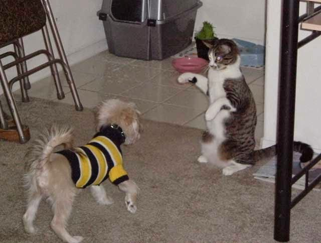

Recovered weblog entry
Fight! Fight! Fight!
T minus six days. Begin final preparations.
Ok, I finally have something. Please keep in mind that this picture may be so visually stimulating that it may cause more than a few gasps of disbelief.
But before we get to the picture, a little background. Lights, please?
A few days ago, our friends came over for a little pre-holiday get-together. Presents were exchanged, but that wasn't the best part. Laughs were shared, but that isn't why I'm writing. My entry today is about the introduction of one little kitty and one tiny puppy.
While the picture describes it the best, I should mention that our cat may have missed his calling. It appears to me that he should have been a prize fighter, as he has one of the best left hooks I've ever seen.
I believe he was just trying to play with the dog, and vice versa, but my cat doesn't know how to play clean. Anyway, enough verbiage, on with the picture:

I thumb nailed it because I wanted to keep it at a respectable size. My friend and I (thank you, Ryan) couldn't capture the two in mid swing, but I remember that this picture must have been taken right before the punch came.
Well, the hour for work draws nigh, so I must end this blog for the week. Thanks for dropping by, I hope that the reading value has not decreased. I'll see you back here on Monday morning. There may be additions to the Media Library this weekend. Happy holidays!